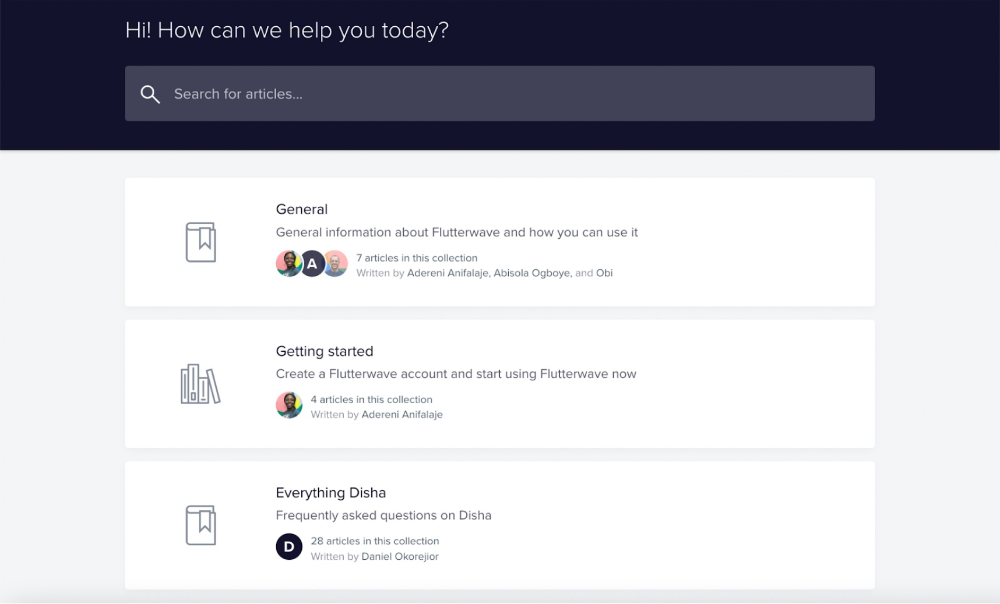
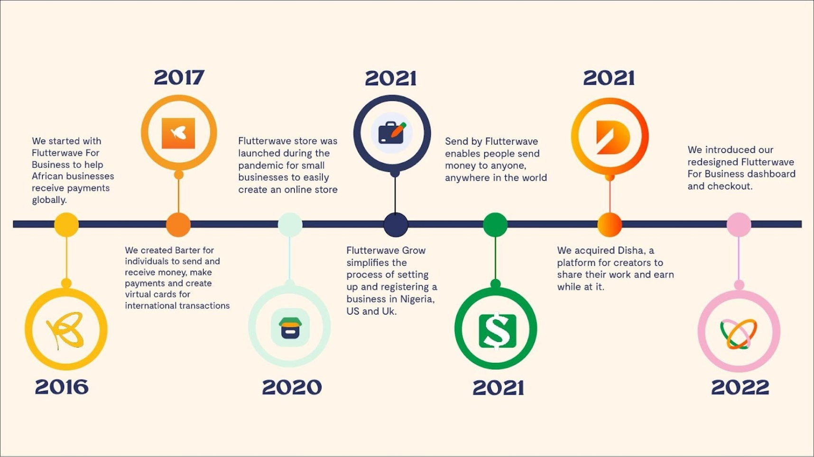

What we needed to solve
After thoroughly analyzing customer feedback and gauging the ever-increasing customer experience trends, the team was able to identify key problem areas existing within the old support page.

Old Flutterwave Support Page
1. Information Cluster:
Although Flutterwave began with just one product in 2016, the company has now built multiple products across diverse customer verticals. This made it difficult for customers to find relevant information as we created more support content. Hence, the information cluster. As part of the team, I was tasked with rethinking how we categorized information and generally improving information architecture to make it easier for customers to navigate the website.

2. Some of the content contained industry jargon and developer-speak that didn't provide the needed clarity for non-technical customers: this occurred because most of the old articles were written by developers. Flutterwave started as a payments infrastructure company targeted at a more technical audience. Our language and communication style had evolved everywhere else, but less so in the support articles.
3. Some of the articles contained outdated flows and information that were not reflective of the changes that had been implemented in the products: Customers were still finding articles that were inconsistent with evolved flows and information on our products.
4. We weren’t measuring the impact of our support content on customer interactions. The company needed a data-centric approach to running a Support Website.